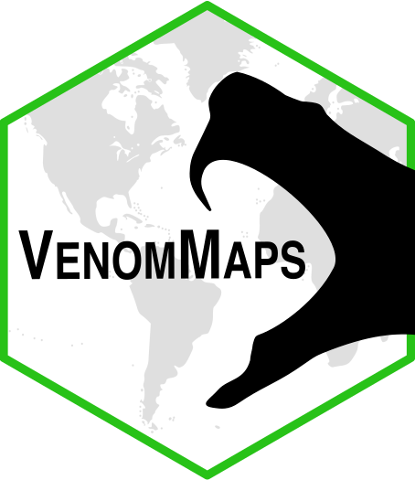

<!doctype html>
<html lang="en">
<head>
  <meta charset="utf-8" />
  <meta name="viewport" content="width=device-width, initial-scale=1" />
  <title>Venom Maps</title>
  <link
    rel="stylesheet"
    href="https://unpkg.com/leaflet@1.9.4/dist/leaflet.css"
    integrity="sha256-p4NxAoJBhIIN+hmNHrzRCf9tD/miZyoHS5obTRR9BMY="
    crossorigin=""
  />
  <link
    rel="stylesheet"
    href="https://cdnjs.cloudflare.com/ajax/libs/selectize.js/0.12.6/css/selectize.default.min.css"
  />
  <style>
    html,
    body,
    #map {
      height: 100%;
      width: 100%;
      margin: 0;
      padding: 0;
    }

    #side-panel {
      position: absolute;
      top: 0;
      right: 0;
      bottom: 0;
      z-index: 1000;
      width: 320px;
      height: 100vh;
      display: flex;
      flex-direction: column;
      overflow: hidden;
      padding: 12px 12px 14px;
      border-radius: 0;
      background: rgba(255, 255, 255, 0.94);
      box-shadow: 0 6px 18px rgba(0, 0, 0, 0.2);
      backdrop-filter: blur(2px);
      transition: width 0.2s ease, padding 0.2s ease;
    }

    #side-panel.collapsed {
      width: 52px;
      padding: 8px;
    }

    #panel-logo {
      display: block;
      width: 100%;
      height: auto;
      margin: 0 auto 8px auto;
    }

    .badge-list {
      margin-top: 6px;
      text-align: center;
    }

    .badge-list a {
      display: block;
      margin: 8px 0;
    }

    .badge-list img {
      max-width: 100%;
      height: auto;
    }

    .panel-section {
      margin-top: 14px;
      border-top: 1px solid #d8d8d8;
      padding-top: 12px;
    }

    .panel-section label {
      display: block;
      margin-bottom: 6px;
      font-size: 13px;
      font-weight: 600;
      color: #1f2937;
    }

    .panel-section select {
      width: 100%;
      padding: 8px;
      border: 1px solid #b9c0c9;
      border-radius: 6px;
      background: #fff;
      font-size: 13px;
    }

    .panel-section .selectize-control {
      margin-bottom: 0;
    }

    .panel-section .selectize-input {
      border-color: #b9c0c9;
      border-radius: 6px;
      box-shadow: none;
      min-height: 40px;
      padding: 6px 8px;
      font-size: 13px;
    }

    .panel-section .selectize-dropdown {
      border-color: #b9c0c9;
      border-radius: 6px;
      font-size: 13px;
    }

    .panel-help {
      margin: 6px 0 0;
      font-size: 11px;
      color: #475569;
    }

    .panel-actions {
      display: flex;
      gap: 8px;
      margin-top: 8px;
      flex-wrap: wrap;
    }

    .panel-actions button {
      border: 1px solid #c7c7c7;
      background: #fff;
      border-radius: 6px;
      padding: 6px 8px;
      font-size: 12px;
      cursor: pointer;
    }

    .panel-actions button:disabled {
      opacity: 0.6;
      cursor: default;
    }

    .toggle-row {
      display: flex;
      align-items: center;
      justify-content: space-between;
      margin-top: 10px;
      gap: 12px;
    }

    .toggle-label {
      font-size: 12px;
      color: #1f2937;
      line-height: 1.2;
    }

    .ios-switch {
      position: relative;
      width: 48px;
      height: 28px;
      flex: 0 0 48px;
    }

    .ios-switch input {
      opacity: 0;
      width: 0;
      height: 0;
      position: absolute;
    }

    .ios-slider {
      position: absolute;
      inset: 0;
      border-radius: 999px;
      background: #cbd5e1;
      transition: 0.2s ease;
      cursor: pointer;
    }

    .ios-slider::before {
      content: '';
      position: absolute;
      width: 22px;
      height: 22px;
      left: 3px;
      top: 3px;
      border-radius: 50%;
      background: #fff;
      box-shadow: 0 1px 2px rgba(0, 0, 0, 0.25);
      transition: 0.2s ease;
    }

    .ios-switch input:checked + .ios-slider {
      background: #34c759;
    }

    .ios-switch input:checked + .ios-slider::before {
      transform: translateX(20px);
    }

    #location-status {
      margin: 8px 0 0;
      font-size: 12px;
      color: #334155;
      min-height: 16px;
    }

    #sdm-status {
      margin: 8px 0 0;
      font-size: 12px;
      color: #334155;
      min-height: 16px;
    }

    #species-status {
      margin: 8px 0 0;
      min-height: 16px;
      font-size: 12px;
      color: #334155;
    }

    #subspecies-legend {
      max-height: 180px;
      min-width: 190px;
      overflow-y: auto;
    }

    .legend-item {
      display: flex;
      align-items: center;
      gap: 6px;
      margin: 4px 0;
      font-size: 11px;
      color: #1f2937;
    }

    .legend-title {
      margin: 0 0 6px;
      font-size: 12px;
      font-weight: 600;
      color: #1f2937;
    }

    .legend-swatch {
      width: 12px;
      height: 12px;
      border: 1px solid rgba(0, 0, 0, 0.25);
      border-radius: 2px;
      flex: 0 0 12px;
    }

    .leaflet-control.subspecies-control {
      background: rgba(255, 255, 255, 0.94);
      border-radius: 8px;
      box-shadow: 0 2px 10px rgba(0, 0, 0, 0.15);
      padding: 8px 10px;
      margin-bottom: 10px;
      margin-left: 10px;
    }

    .occurrence-legend {
      margin-top: 10px;
      border-top: 1px dashed #c8cfd8;
      padding-top: 8px;
    }

    .panel-header {
      display: flex;
      justify-content: flex-end;
      align-items: center;
      margin-bottom: 6px;
      flex: 0 0 auto;
    }

    .panel-content {
      flex: 1 1 auto;
      min-height: 0;
      overflow-y: auto;
      overflow-x: hidden;
      display: flex;
      flex-direction: column;
    }

    #panel-toggle {
      border: 1px solid #c7c7c7;
      background: #fff;
      border-radius: 6px;
      width: 34px;
      height: 28px;
      cursor: pointer;
      font-size: 15px;
      line-height: 1;
    }

    #side-panel.collapsed .panel-content {
      display: none;
    }

    #side-panel.collapsed .panel-header {
      margin-bottom: 0;
    }

    .leaflet-control-layers {
      font-family: Arial, sans-serif;
      font-size: 13px;
    }

    @media (max-width: 720px) {
      #side-panel {
        width: min(320px, 88vw);
      }
    }
  </style>
</head>
<body>
  <div id="map" aria-label="Venomous snake map"></div>
  <aside id="side-panel" aria-label="Map options panel">
    <div class="panel-header">
      <button id="panel-toggle" type="button" aria-expanded="true" aria-label="Collapse panel">❯</button>
    </div>
    <div class="panel-content">
      
      <div class="badge-list">
        <a target="_blank" rel="noopener noreferrer" href="https://github.com/RhettRautsaw/VenomMaps">
          
        </a>
        <a target="_blank" rel="noopener noreferrer" href="https://doi.org/10.1038/s41597-022-01323-4">
          
        </a>
        <a target="_blank" rel="noopener noreferrer" href="https://doi.org/10.5281/zenodo.5637094">
          
        </a>
        <a target="_blank" rel="noopener noreferrer" href="https://creativecommons.org/licenses/by/4.0/">
          
        </a>
      </div>
      <div class="panel-section">
        <label for="country-filter">Filter by country</label>
        <select id="country-filter" aria-label="Filter species by country"></select>
        <p class="panel-help">Start typing a country name (e.g., United States).</p>
        <div class="panel-actions">
          <button id="use-location" type="button">Species Near Me</button>
          <button id="clear-location" type="button" disabled>Clear Location Filter</button>
        </div>
        <p id="location-status"></p>
      </div>
      <div class="panel-section">
        <label for="species-select">Distribution species</label>
        <select id="species-select" aria-label="Select species distributions" multiple>
        </select>
        <p class="panel-help">Type to search and click to add multiple species.</p>
        <p id="species-status"></p>
      </div>
      <div class="panel-section">
        <label>Species Distribution Models (SDMs)</label>
        <div class="toggle-row">
          <span class="toggle-label">Show distributions</span>
          <label class="ios-switch">
            <input id="toggle-distributions" type="checkbox" checked />
            <span class="ios-slider"></span>
          </label>
        </div>
        <div class="toggle-row">
          <span class="toggle-label">Show SDMs</span>
          <label class="ios-switch">
            <input id="toggle-sdms" type="checkbox" />
            <span class="ios-slider"></span>
          </label>
        </div>
        <div class="toggle-row">
          <span class="toggle-label">Use threshold model (off = logistic)</span>
          <label class="ios-switch">
            <input id="toggle-threshold-model" type="checkbox" />
            <span class="ios-slider"></span>
          </label>
        </div>
        <p id="sdm-status"></p>
        <div class="toggle-row">
          <span class="toggle-label">Show occurrence records</span>
          <label class="ios-switch">
            <input id="toggle-occurrences" type="checkbox" />
            <span class="ios-slider"></span>
          </label>
        </div>
        <div class="occurrence-legend">
          <div class="legend-item"><span class="legend-swatch" style="background:#ef4444;"></span><span>Red: points are dubious/questionable</span></div>
          <div class="legend-item"><span class="legend-swatch" style="background:#9ca3af;"></span><span>Gray: points are beyond their distribution</span></div>
          <div class="legend-item"><span class="legend-swatch" style="background:#2563eb;"></span><span>Blue: points are not on land</span></div>
          <div class="legend-item"><span class="legend-swatch" style="background:#facc15;"></span><span>Yellow: species ID has been altered</span></div>
        </div>
      </div>
    </div>
  </aside>

  <script
    src="https://unpkg.com/leaflet@1.9.4/dist/leaflet.js"
    integrity="sha256-20nQCchB9co0qIjJZRGuk2/Z9VM+kNiyxNV1lvTlZBo="
    crossorigin=""
  ></script>
  <script src="https://code.jquery.com/jquery-3.7.1.min.js"></script>
  <script src="https://cdnjs.cloudflare.com/ajax/libs/selectize.js/0.12.6/js/standalone/selectize.min.js"></script>
  <script src="https://unpkg.com/georaster/dist/georaster.browserify.min.js"></script>
  <script src="https://unpkg.com/georaster-layer-for-leaflet/dist/georaster-layer-for-leaflet.min.js"></script>
  <script src="data/distributions/species-manifest.js"></script>
  <script src="data/species-countries.js"></script>
  <script src="data/distributions/species-bboxes.js"></script>
  <script src="data/sdms/sdm-manifest.js"></script>
  <script src="data/occurrence/occurrence-manifest.js"></script>
  <script>
    const map = L.map('map', {
      center: [20, 0],
      zoom: 2,
      worldCopyJump: true
    });
    let sdmLayerGroup = L.layerGroup().addTo(map);

    const topoWms = L.tileLayer.wms('https://ows.mundialis.de/services/service?', {
      layers: 'TOPO-WMS',
      format: 'image/png',
      transparent: false,
      attribution: '&copy; mundialis'
    });

    const esriWorldStreetMap = L.tileLayer(
      'https://server.arcgisonline.com/ArcGIS/rest/services/World_Street_Map/MapServer/tile/{z}/{y}/{x}',
      {
        attribution: 'Tiles &copy; Esri'
      }
    );

    const esriWorldTerrain = L.tileLayer(
      'https://server.arcgisonline.com/ArcGIS/rest/services/World_Terrain_Base/MapServer/tile/{z}/{y}/{x}',
      {
        attribution: 'Tiles &copy; Esri'
      }
    );

    const esriWorldImagery = L.tileLayer(
      'https://server.arcgisonline.com/ArcGIS/rest/services/World_Imagery/MapServer/tile/{z}/{y}/{x}',
      {
        attribution: 'Tiles &copy; Esri'
      }
    );

    const countryStateBoundaries = L.tileLayer(
      'https://services.arcgisonline.com/ArcGIS/rest/services/Reference/World_Boundaries_and_Places/MapServer/tile/{z}/{y}/{x}',
      {
        attribution: 'Boundaries &copy; Esri'
      }
    );

    const labelsOverlay = L.tileLayer(
      'https://services.arcgisonline.com/ArcGIS/rest/services/Reference/World_Reference_Overlay/MapServer/tile/{z}/{y}/{x}',
      {
        attribution: 'Labels &copy; Esri'
      }
    );

    topoWms.addTo(map);

    const baseLayers = {
      'Topography (Mundialis)': topoWms,
      'Esri.WorldStreetMap': esriWorldStreetMap,
      'Esri.WorldTerrain': esriWorldTerrain,
      'Esri.WorldImagery': esriWorldImagery
    };

    const overlays = {
      'Country/State Boundaries': countryStateBoundaries,
      Labels: labelsOverlay
    };

    L.control.layers(baseLayers, overlays, {
      position: 'bottomleft',
      collapsed: false
    }).addTo(map);
    map.on('baselayerchange', () => {
      forceRefreshSdmLayers();
    });

    let subspeciesLegend = null;
    const legendControl = L.control({ position: 'bottomleft' });
    legendControl.onAdd = () => {
      const controlDiv = L.DomUtil.create('div', 'leaflet-control subspecies-control');
      controlDiv.innerHTML = '<p class="legend-title">Subspecies</p><div id="subspecies-legend"></div>';
      L.DomEvent.disableClickPropagation(controlDiv);
      return controlDiv;
    };
    legendControl.addTo(map);
    subspeciesLegend = document.getElementById('subspecies-legend');

    const sidePanel = document.getElementById('side-panel');
    const panelToggle = document.getElementById('panel-toggle');
    const speciesSelect = document.getElementById('species-select');
    const countryFilterSelect = document.getElementById('country-filter');
    const useLocationButton = document.getElementById('use-location');
    const clearLocationButton = document.getElementById('clear-location');
    const toggleDistributionsSwitch = document.getElementById('toggle-distributions');
    const toggleSdmsSwitch = document.getElementById('toggle-sdms');
    const thresholdModelSwitch = document.getElementById('toggle-threshold-model');
    const toggleOccurrencesSwitch = document.getElementById('toggle-occurrences');
    const locationStatus = document.getElementById('location-status');
    const speciesStatus = document.getElementById('species-status');
    const sdmStatus = document.getElementById('sdm-status');
    const brBgPalette = [
      '#543005',
      '#8c510a',
      '#bf812d',
      '#dfc27d',
      '#f6e8c3',
      '#f5f5f5',
      '#c7eae5',
      '#80cdc1',
      '#35978f',
      '#01665e',
      '#003c30'
    ];
    const activeDistributionLayers = new Map();
    const activeSdmLayers = new Map();
    const activeOccurrenceLayers = new Map();
    const speciesGeojsonCache = new Map();
    const sdmRasterCache = new Map();
    const occurrenceCache = new Map();
    const speciesCountryMap = window.venomSpeciesCountries || {};
    const speciesBBoxMap = window.venomSpeciesBBoxes || {};
    const sdmManifest = window.venomSdmManifest || {};
    const occurrenceManifest = window.venomOccurrenceManifest || {};
    const allSpeciesFiles = [];
    const countryToSpeciesMap = new Map();

    let speciesSelectize = null;
    let countrySelectize = null;
    let speciesRequestToken = 0;
    let countryFilterValue = '';
    let locationSpeciesSet = null;
    let locationPointMarker = null;
    let showDistributions = true;
    let showSdms = false;
    let useThresholdModel = false;
    let showOccurrences = false;
    let currentSdmPaneName = null;

    function createOrResetSdmPane(paneName) {
      const existing = map.getPane(paneName);
      if (existing) {
        existing.innerHTML = '';
      } else {
        map.createPane(paneName);
      }
      const pane = map.getPane(paneName);
      pane.style.zIndex = 450;
      currentSdmPaneName = paneName;
      return paneName;
    }

    function pruneOldSdmPanes(activePaneName) {
      const panes = map.getPanes();
      for (const [name, pane] of Object.entries(panes)) {
        if (!name.startsWith('sdmPane_dynamic_')) {
          continue;
        }
        if (name === activePaneName) {
          continue;
        }
        if (pane && pane.parentNode) {
          pane.parentNode.removeChild(pane);
        }
        if (map._panes && map._panes[name]) {
          delete map._panes[name];
        }
      }
    }

    panelToggle.addEventListener('click', () => {
      const isCollapsed = sidePanel.classList.toggle('collapsed');
      panelToggle.textContent = isCollapsed ? '❮' : '❯';
      panelToggle.setAttribute('aria-expanded', String(!isCollapsed));
      panelToggle.setAttribute('aria-label', isCollapsed ? 'Expand panel' : 'Collapse panel');
    });

    function toSpeciesLabel(fileName) {
      return fileName.replace('.geojson', '').replaceAll('_', ' ');
    }

    function getSubspecies(feature) {
      const props = feature && feature.properties ? feature.properties : {};
      return props.Subspecies || props.subspecies || props.SUBSPECIES || 'Unspecified';
    }

    function clearDistributionLayers() {
      for (const layer of activeDistributionLayers.values()) {
        map.removeLayer(layer);
      }
      activeDistributionLayers.clear();
    }

    function clearOccurrenceLayers() {
      for (const layer of activeOccurrenceLayers.values()) {
        map.removeLayer(layer);
      }
      activeOccurrenceLayers.clear();
    }

    function clearSdmLayers() {
      // Remove any SDM layers that may still be attached outside our tracked group.
      const layersToRemove = [];
      map.eachLayer((layer) => {
        const paneName = layer && layer.options ? layer.options.pane : null;
        if (typeof paneName === 'string' && paneName.startsWith('sdmPane_dynamic_')) {
          layersToRemove.push(layer);
        }
      });
      for (const layer of layersToRemove) {
        map.removeLayer(layer);
      }

      map.removeLayer(sdmLayerGroup);
      sdmLayerGroup = L.layerGroup().addTo(map);
      activeSdmLayers.clear();
      const sdmPane = currentSdmPaneName ? map.getPane(currentSdmPaneName) : null;
      if (sdmPane) {
        sdmPane.innerHTML = '';
      }
    }

    function forceRefreshSdmLayers() {
      sdmLayerGroup.eachLayer((sdmLayer) => {
        if (sdmLayer.redraw) {
          sdmLayer.redraw();
        }
        if (sdmLayer.bringToFront) {
          sdmLayer.bringToFront();
        }
      });
      map.invalidateSize(false);
      // GeoRasterLayer can defer visual updates until a move/zoom event.
      // Trigger a tiny pan cycle to force immediate tile refresh.
      map.panBy([1, 0], { animate: false });
      map.panBy([-1, 0], { animate: false });
    }

    function renderSubspeciesLegend(colorMap) {
      const entries = [...colorMap.entries()].sort((a, b) => a[0].localeCompare(b[0]));
      if (!entries.length) {
        subspeciesLegend.innerHTML = '';
        return;
      }

      const maxLegendItems = 28;
      const shownEntries = entries.slice(0, maxLegendItems);
      const remainder = entries.length - shownEntries.length;
      const legendHtml = shownEntries
        .map(
          ([name, color]) =>
            `<div class="legend-item"><span class="legend-swatch" style="background:${color};"></span><span>${name}</span></div>`
        )
        .join('');
      const remainderHtml = remainder > 0 ? `<div class="legend-item"><span>+${remainder} more subspecies</span></div>` : '';
      subspeciesLegend.innerHTML = legendHtml + remainderHtml;
    }

    function getSpreadPaletteColors(count) {
      if (count <= 0) {
        return [];
      }
      if (count === 1) {
        return [brBgPalette[Math.floor(brBgPalette.length / 2)]];
      }

      const maxIndex = brBgPalette.length - 1;
      const usedIndices = new Set();
      const colors = [];
      for (let i = 0; i < count; i += 1) {
        const targetIndex = Math.round((i * maxIndex) / (count - 1));
        if (!usedIndices.has(targetIndex)) {
          usedIndices.add(targetIndex);
          colors.push(brBgPalette[targetIndex]);
        }
      }
      if (colors.length < count) {
        for (let i = 0; i < brBgPalette.length && colors.length < count; i += 1) {
          if (!usedIndices.has(i)) {
            usedIndices.add(i);
            colors.push(brBgPalette[i]);
          }
        }
      }
      while (colors.length < count) {
        colors.push(brBgPalette[colors.length % brBgPalette.length]);
      }
      return colors;
    }

    function buildSubspeciesColorMap(geojsonBySpecies) {
      const uniqueSubspecies = new Set();
      for (const { geojson } of geojsonBySpecies) {
        for (const feature of geojson.features || []) {
          uniqueSubspecies.add(getSubspecies(feature));
        }
      }
      const sortedSubspecies = [...uniqueSubspecies].sort((a, b) => a.localeCompare(b));
      const spreadColors = getSpreadPaletteColors(sortedSubspecies.length);
      const colorMap = new Map();
      for (const [index, subspeciesName] of sortedSubspecies.entries()) {
        colorMap.set(subspeciesName, spreadColors[index]);
      }
      return colorMap;
    }

    function buildCountryToSpeciesMap() {
      for (const [speciesFile, countries] of Object.entries(speciesCountryMap)) {
        for (const country of countries || []) {
          if (!countryToSpeciesMap.has(country)) {
            countryToSpeciesMap.set(country, new Set());
          }
          countryToSpeciesMap.get(country).add(speciesFile);
        }
      }
    }

    function initCountrySelectize() {
      if (!window.jQuery || !window.jQuery.fn || !window.jQuery.fn.selectize) {
        countryFilterSelect.addEventListener('change', () => {
          countryFilterValue = countryFilterSelect.value;
          applySpeciesFilters();
        });
        return;
      }

      const $countrySelect = window.jQuery(countryFilterSelect);
      $countrySelect.selectize({
        maxItems: 1,
        valueField: 'value',
        labelField: 'text',
        searchField: ['text'],
        sortField: 'text',
        placeholder: 'Search country...',
        allowEmptyOption: true
      });

      countrySelectize = $countrySelect[0].selectize;
      countrySelectize.on('change', (value) => {
        countryFilterValue = value || '';
        applySpeciesFilters();
      });
    }

    function initSpeciesSelectize() {
      if (!window.jQuery || !window.jQuery.fn || !window.jQuery.fn.selectize) {
        speciesStatus.textContent = 'Search UI unavailable; using basic multi-select.';
        speciesSelect.size = 10;
        speciesSelect.addEventListener('change', () => {
          const selectedFiles = [...speciesSelect.selectedOptions].map((option) => option.value);
          updateDistributionSelection(selectedFiles);
        });
        return;
      }

      const $speciesSelect = window.jQuery(speciesSelect);
      $speciesSelect.selectize({
        plugins: ['remove_button'],
        valueField: 'value',
        labelField: 'text',
        searchField: ['text'],
        sortField: 'text',
        maxOptions: 1000,
        placeholder: 'Search species and add...',
        closeAfterSelect: false
      });

      speciesSelectize = $speciesSelect[0].selectize;
      speciesSelectize.on('change', () => {
        updateDistributionSelection(speciesSelectize.items.slice());
      });
    }

    function getFilteredSpeciesFiles() {
      return allSpeciesFiles.filter((fileName) => {
        const countryMatch = !countryFilterValue || (countryToSpeciesMap.get(countryFilterValue) && countryToSpeciesMap.get(countryFilterValue).has(fileName));
        const locationMatch = !locationSpeciesSet || locationSpeciesSet.has(fileName);
        return countryMatch && locationMatch;
      });
    }

    function applySpeciesFilters() {
      const filteredSpecies = getFilteredSpeciesFiles();

      if (speciesSelectize) {
        const selectedNow = speciesSelectize.items.slice();
        const validSelected = selectedNow.filter((item) => filteredSpecies.includes(item));
        speciesSelectize.clearOptions();
        speciesSelectize.addOption(filteredSpecies.map((fileName) => ({ value: fileName, text: toSpeciesLabel(fileName) })));
        speciesSelectize.refreshOptions(false);
        speciesSelectize.setValue(validSelected, true);
        updateDistributionSelection(validSelected);
      } else {
        const previouslySelected = [...speciesSelect.selectedOptions].map((option) => option.value);
        const validSelected = previouslySelected.filter((item) => filteredSpecies.includes(item));
        speciesSelect.innerHTML = '';
        for (const fileName of filteredSpecies) {
          const option = document.createElement('option');
          option.value = fileName;
          option.textContent = toSpeciesLabel(fileName);
          option.selected = validSelected.includes(fileName);
          speciesSelect.appendChild(option);
        }
        updateDistributionSelection(validSelected);
      }

      speciesStatus.textContent = `${filteredSpecies.length} species available after filters.`;
    }

    async function getSpeciesGeojson(selectedFile) {
      if (speciesGeojsonCache.has(selectedFile)) {
        return speciesGeojsonCache.get(selectedFile);
      }
      const response = await fetch(`data/distributions/${selectedFile}`);
      if (!response.ok) {
        throw new Error(`Could not load ${selectedFile}`);
      }
      const geojson = await response.json();
      speciesGeojsonCache.set(selectedFile, geojson);
      return geojson;
    }

    function getSdmFileName(speciesFile, modelType) {
      const entry = sdmManifest[speciesFile];
      if (!entry) {
        return null;
      }
      if (modelType === 'threshold') {
        const file = entry.threshold || null;
        return file && file.endsWith('_avg_cloglog_p10b.tif') ? file : null;
      }
      const file = entry.logistic || null;
      return file && file.endsWith('_avg_cloglog.tif') ? file : null;
    }

    async function getSdmRaster(sdmFileName) {
      if (sdmRasterCache.has(sdmFileName)) {
        return sdmRasterCache.get(sdmFileName);
      }
      const response = await fetch(`data/sdms/${sdmFileName}?v=${encodeURIComponent(sdmFileName)}`, {
        cache: 'no-store'
      });
      if (!response.ok) {
        throw new Error(`Could not load SDM raster ${sdmFileName}`);
      }
      const arrayBuffer = await response.arrayBuffer();
      const georaster = await parseGeoraster(arrayBuffer);
      sdmRasterCache.set(sdmFileName, georaster);
      return georaster;
    }

    async function getOccurrenceRecords(speciesFile) {
      const manifestEntry = occurrenceManifest[speciesFile];
      if (!manifestEntry || !manifestEntry.file) {
        return [];
      }
      const fileName = manifestEntry.file;
      if (occurrenceCache.has(fileName)) {
        return occurrenceCache.get(fileName);
      }
      const response = await fetch(`data/occurrence/by_species/${fileName}?v=${encodeURIComponent(fileName)}`, {
        cache: 'no-store'
      });
      if (!response.ok) {
        throw new Error(`Could not load occurrence file ${fileName}`);
      }
      const records = await response.json();
      occurrenceCache.set(fileName, records);
      return records;
    }

    function getOccurrenceColor(flagValue, flagDetailedValue) {
      const flag = String(flagValue || '').trim().toLowerCase();
      const detailed = String(flagDetailedValue || '').trim().toLowerCase();

      // Prioritize exact flag categories from the dataset.
      if (flag === 'dubious') {
        return '#ef4444';
      }
      if (flag === 'geodist') {
        return '#9ca3af';
      }
      if (flag === 'noland') {
        return '#2563eb';
      }
      if (flag === 'updated') {
        return '#facc15';
      }

      const combined = `${flag} ${detailed}`;

      if (combined.includes('dubious') || combined.includes('questionable') || flag === 'dubious') {
        return '#ef4444';
      }
      if (combined.includes('geodist') || combined.includes('distribution') || combined.includes('beyond')) {
        return '#9ca3af';
      }
      if (combined.includes('noland') || combined.includes('no_land') || combined.includes('no land')) {
        return '#2563eb';
      }
      if (combined.includes('updated') || combined.includes('species_updated') || combined.includes('species id')) {
        return '#facc15';
      }
      return '#111827';
    }

    function sdmPixelToColor(value, modelType) {
      if (value === null || value === undefined || Number.isNaN(value)) {
        return null;
      }
      if (modelType === 'threshold') {
        return value > 0 ? 'rgba(0, 109, 44, 0.70)' : null;
      }
      const v = Math.max(0, Math.min(1, Number(value)));
      if (v <= 0) {
        return null;
      }

      // Similar to: colorRampPalette(c("#440154FF", "#3B528BCC", "#21908C99", "#5DC86366", "#FDE72500"))
      // but reversed for "darker = higher occupancy".
      const stops = [
        [253, 231, 37, 0.00],
        [93, 200, 99, 0.40],
        [33, 144, 140, 0.60],
        [59, 82, 139, 0.80],
        [68, 1, 84, 1.00]
      ];

      function lerp(a, b, t) {
        return a + (b - a) * t;
      }

      const scaled = v * (stops.length - 1);
      const idx = Math.min(stops.length - 2, Math.floor(scaled));
      const t = scaled - idx;
      const s0 = stops[idx];
      const s1 = stops[idx + 1];
      const r = Math.round(lerp(s0[0], s1[0], t));
      const g = Math.round(lerp(s0[1], s1[1], t));
      const b = Math.round(lerp(s0[2], s1[2], t));
      const a = lerp(s0[3], s1[3], t);
      return `rgba(${r}, ${g}, ${b}, ${a.toFixed(3)})`;
    }

    function pointInRing(point, ring) {
      const x = point[0];
      const y = point[1];
      let inside = false;
      for (let i = 0, j = ring.length - 1; i < ring.length; j = i++) {
        const xi = ring[i][0];
        const yi = ring[i][1];
        const xj = ring[j][0];
        const yj = ring[j][1];
        const intersects = ((yi > y) !== (yj > y)) && (x < ((xj - xi) * (y - yi)) / ((yj - yi) || 1e-12) + xi);
        if (intersects) {
          inside = !inside;
        }
      }
      return inside;
    }

    function pointInGeometry(point, geometry) {
      if (!geometry) {
        return false;
      }
      if (geometry.type === 'Polygon') {
        const polygon = geometry.coordinates || [];
        if (!polygon.length || !pointInRing(point, polygon[0])) {
          return false;
        }
        for (let i = 1; i < polygon.length; i += 1) {
          if (pointInRing(point, polygon[i])) {
            return false;
          }
        }
        return true;
      }
      if (geometry.type === 'MultiPolygon') {
        for (const polygon of geometry.coordinates || []) {
          if (!polygon.length || !pointInRing(point, polygon[0])) {
            continue;
          }
          let inHole = false;
          for (let i = 1; i < polygon.length; i += 1) {
            if (pointInRing(point, polygon[i])) {
              inHole = true;
              break;
            }
          }
          if (!inHole) {
            return true;
          }
        }
      }
      return false;
    }

    function pointInGeojson(point, geojson) {
      if (!geojson) {
        return false;
      }
      if (geojson.type === 'FeatureCollection') {
        for (const feature of geojson.features || []) {
          if (pointInGeometry(point, feature.geometry)) {
            return true;
          }
        }
      } else if (geojson.type === 'Feature') {
        return pointInGeometry(point, geojson.geometry);
      } else {
        return pointInGeometry(point, geojson);
      }
      return false;
    }

    async function findSpeciesAtLocation(lat, lng) {
      const point = [lng, lat];
      const candidates = allSpeciesFiles.filter((fileName) => {
        const bbox = speciesBBoxMap[fileName];
        if (!bbox || bbox.length !== 4) {
          return true;
        }
        return lng >= bbox[0] && lat >= bbox[1] && lng <= bbox[2] && lat <= bbox[3];
      });

      locationStatus.textContent = `Checking ${candidates.length} candidate species...`;
      const results = await Promise.all(
        candidates.map(async (fileName) => {
          try {
            const geojson = await getSpeciesGeojson(fileName);
            return pointInGeojson(point, geojson) ? fileName : null;
          } catch (error) {
            console.error(error);
            return null;
          }
        })
      );
      return results.filter(Boolean);
    }

    function populateCountryFilterOptions() {
      const countries = [...countryToSpeciesMap.keys()].sort((a, b) => a.localeCompare(b));
      const allOption = document.createElement('option');
      allOption.value = '';
      allOption.textContent = 'All countries';
      countryFilterSelect.appendChild(allOption);
      for (const country of countries) {
        const option = document.createElement('option');
        option.value = country;
        option.textContent = country;
        countryFilterSelect.appendChild(option);
      }
    }

    async function updateDistributionSelection(selectedFiles) {
      speciesRequestToken += 1;
      const requestToken = speciesRequestToken;
      const sdmPaneName = createOrResetSdmPane(`sdmPane_dynamic_${requestToken}`);
      pruneOldSdmPanes(sdmPaneName);

      clearDistributionLayers();
      clearSdmLayers();
      clearOccurrenceLayers();
      renderSubspeciesLegend(new Map());
      sdmStatus.textContent = '';

      if (!selectedFiles.length) {
        speciesStatus.textContent = `${getFilteredSpeciesFiles().length} species available after filters.`;
        return;
      }

      try {
        const allBounds = L.latLngBounds();
        let loadedSdmCount = 0;
        let missingSdmCount = 0;
        const loadedSdmFiles = [];
        const loadedSdmRanges = [];
        const selectedModelType = useThresholdModel ? 'threshold' : 'logistic';

        if (showDistributions) {
          const geojsonBySpecies = await Promise.all(
            selectedFiles.map(async (selectedFile) => {
              const geojson = await getSpeciesGeojson(selectedFile);
              return { selectedFile, geojson };
            })
          );

          if (requestToken !== speciesRequestToken) {
            return;
          }

          const colorMap = buildSubspeciesColorMap(geojsonBySpecies);
          renderSubspeciesLegend(colorMap);

          for (const { selectedFile, geojson } of geojsonBySpecies) {
            const speciesLabel = toSpeciesLabel(selectedFile);
            const layer = L.geoJSON(geojson, {
              style: (feature) => {
                const subspeciesName = getSubspecies(feature);
                const color = colorMap.get(subspeciesName) || brBgPalette[0];
                return {
                  color: '#000000',
                  weight: 3,
                  opacity: 1,
                  fillColor: color,
                  fillOpacity: 0.75
                };
              },
              onEachFeature: (feature, featureLayer) => {
                const subspeciesName = getSubspecies(feature);
                featureLayer.bindPopup(
                  `<strong>Species:</strong> ${speciesLabel}<br><strong>Subspecies:</strong> ${subspeciesName}`
                );
              }
            }).addTo(map);

            activeDistributionLayers.set(selectedFile, layer);
            const layerBounds = layer.getBounds();
            if (layerBounds.isValid()) {
              allBounds.extend(layerBounds);
            }
          }
        }

        if (showSdms) {
          for (const selectedFile of selectedFiles) {
            const sdmFileName = getSdmFileName(selectedFile, selectedModelType);
            if (!sdmFileName) {
              missingSdmCount += 1;
              continue;
            }
            if (
              (selectedModelType === 'threshold' && !sdmFileName.endsWith('_avg_cloglog_p10b.tif')) ||
              (selectedModelType === 'logistic' && !sdmFileName.endsWith('_avg_cloglog.tif'))
            ) {
              missingSdmCount += 1;
              continue;
            }
            try {
              const georaster = await getSdmRaster(sdmFileName);
              if (requestToken !== speciesRequestToken) {
                return;
              }

              const sdmLayer = new GeoRasterLayer({
                georaster,
                pane: sdmPaneName,
                opacity: 1,
                zIndex: 450,
                resolution: 128,
                pixelValuesToColorFn: (values) => sdmPixelToColor(values[0], selectedModelType)
              });

              sdmLayerGroup.addLayer(sdmLayer);
              activeSdmLayers.set(`${selectedFile}::${selectedModelType}`, sdmLayer);
              loadedSdmFiles.push(sdmFileName);
              loadedSdmRanges.push(`${georaster.mins?.[0] ?? 'NA'}..${georaster.maxs?.[0] ?? 'NA'}`);
              if (sdmLayer.getBounds && sdmLayer.getBounds().isValid()) {
                allBounds.extend(sdmLayer.getBounds());
              }
              loadedSdmCount += 1;
            } catch (error) {
              missingSdmCount += 1;
              console.error(error);
            }
          }
          requestAnimationFrame(() => {
            forceRefreshSdmLayers();
          });
        }

        if (showOccurrences) {
          for (const selectedFile of selectedFiles) {
            try {
              const records = await getOccurrenceRecords(selectedFile);
              if (requestToken !== speciesRequestToken) {
                return;
              }
              if (!records.length) {
                continue;
              }

              const occurrenceLayer = L.layerGroup();
              for (const rec of records) {
                const lat = Number(rec.lat);
                const lng = Number(rec.lng);
                if (!Number.isFinite(lat) || !Number.isFinite(lng)) {
                  continue;
                }
                const flag = rec.flag || '';
                const point = L.circleMarker([lat, lng], {
                  radius: 2.5,
                  weight: 0,
                  fillColor: getOccurrenceColor(flag, rec.flag_detailed),
                  fillOpacity: 0.75,
                  pane: 'markerPane'
                }).bindPopup(
                  `<strong>ID:</strong> ${rec.id || 'NA'}<br>` +
                  `<strong>Recorded as:</strong> ${rec.taxonomy_updated_species || 'NA'}<br>` +
                  `<strong>Updated to:</strong> ${rec.final_species || 'NA'}<br>` +
                  `<strong>Accuracy:</strong> ${rec.accuracy_m || 'NA'}<br>` +
                  `<strong>Flag:</strong> ${rec.flag || 'NA'}<br>` +
                  `<strong>Flags:</strong> ${rec.flag_detailed || 'NA'}`
                );
                occurrenceLayer.addLayer(point);
              }
              occurrenceLayer.addTo(map);
              activeOccurrenceLayers.set(selectedFile, occurrenceLayer);
            } catch (error) {
              console.error(error);
            }
          }
        }

        if (allBounds.isValid()) {
          map.fitBounds(allBounds, { padding: [25, 25] });
        }

        if (showSdms) {
          const modelLabel = selectedModelType === 'threshold' ? 'threshold' : 'logistic';
          const preview = loadedSdmFiles.slice(0, 3).join(', ');
          const rangePreview = loadedSdmRanges.slice(0, 3).join(', ');
          const previewText = preview ? ` Example: ${preview}` : '';
          const rangeText = rangePreview ? ` Range: ${rangePreview}` : '';
          sdmStatus.textContent = `SDMs (${modelLabel}) in view: loaded ${loadedSdmCount}, missing ${missingSdmCount}.${previewText}${rangeText}`;
        } else {
          const modelLabel = selectedModelType === 'threshold' ? 'threshold' : 'logistic';
          sdmStatus.textContent = `SDMs are turned off. Selected model: ${modelLabel}.`;
        }

        if (showDistributions) {
          speciesStatus.textContent = `Loaded ${selectedFiles.length} species distributions.`;
        } else if (showSdms) {
          speciesStatus.textContent = `Displaying SDMs for selected species (distributions hidden).`;
          renderSubspeciesLegend(new Map());
        } else if (showOccurrences) {
          speciesStatus.textContent = 'Displaying occurrence records for selected species.';
          renderSubspeciesLegend(new Map());
        } else {
          speciesStatus.textContent = 'Distributions, SDMs, and occurrence records are off.';
          renderSubspeciesLegend(new Map());
        }
      } catch (error) {
        if (requestToken !== speciesRequestToken) {
          return;
        }
        if (window.location.protocol === 'file:') {
          speciesStatus.textContent = 'Loading map layers is blocked in file:// mode. Use a local web server.';
        } else {
          speciesStatus.textContent = 'Failed to load one or more selected layers.';
        }
        console.error(error);
      }
    }

    function syncSdmSwitches() {
      toggleDistributionsSwitch.checked = showDistributions;
      toggleSdmsSwitch.checked = showSdms;
      thresholdModelSwitch.checked = useThresholdModel;
      toggleOccurrencesSwitch.checked = showOccurrences;
    }

    function rerenderSelectedSpeciesLayers() {
      const selectedFiles = speciesSelectize
        ? speciesSelectize.items.slice()
        : [...speciesSelect.selectedOptions].map((option) => option.value);
      updateDistributionSelection(selectedFiles);
    }

    toggleDistributionsSwitch.addEventListener('change', () => {
      showDistributions = toggleDistributionsSwitch.checked;
      syncSdmSwitches();
      rerenderSelectedSpeciesLayers();
    });

    toggleSdmsSwitch.addEventListener('change', () => {
      showSdms = toggleSdmsSwitch.checked;
      syncSdmSwitches();
      rerenderSelectedSpeciesLayers();
    });

    thresholdModelSwitch.addEventListener('change', () => {
      useThresholdModel = thresholdModelSwitch.checked;
      syncSdmSwitches();
      rerenderSelectedSpeciesLayers();
    });

    toggleOccurrencesSwitch.addEventListener('change', () => {
      showOccurrences = toggleOccurrencesSwitch.checked;
      syncSdmSwitches();
      rerenderSelectedSpeciesLayers();
    });

    useLocationButton.addEventListener('click', () => {
      if (!navigator.geolocation) {
        locationStatus.textContent = 'Geolocation is not supported by this browser.';
        return;
      }

      useLocationButton.disabled = true;
      locationStatus.textContent = 'Requesting your location...';

      navigator.geolocation.getCurrentPosition(
        async (position) => {
          const lat = position.coords.latitude;
          const lng = position.coords.longitude;
          locationStatus.textContent = 'Finding overlapping species at your location...';

          try {
            const nearbySpecies = await findSpeciesAtLocation(lat, lng);
            locationSpeciesSet = new Set(nearbySpecies);
            clearLocationButton.disabled = false;
            applySpeciesFilters();

            if (locationPointMarker) {
              map.removeLayer(locationPointMarker);
            }
            locationPointMarker = L.circleMarker([lat, lng], {
              radius: 6,
              color: '#111827',
              fillColor: '#f59e0b',
              fillOpacity: 0.9,
              weight: 2
            }).addTo(map).bindPopup('Your location');

            map.setView([lat, lng], Math.max(map.getZoom(), 6));
            locationStatus.textContent = `Location filter active: ${nearbySpecies.length} species found near you.`;
          } catch (error) {
            locationStatus.textContent = 'Unable to compute nearby species.';
            console.error(error);
          } finally {
            useLocationButton.disabled = false;
          }
        },
        (error) => {
          useLocationButton.disabled = false;
          locationStatus.textContent = `Location error: ${error.message}`;
        },
        { enableHighAccuracy: true, timeout: 15000, maximumAge: 0 }
      );
    });

    clearLocationButton.addEventListener('click', () => {
      locationSpeciesSet = null;
      clearLocationButton.disabled = true;
      locationStatus.textContent = 'Location filter cleared.';
      if (locationPointMarker) {
        map.removeLayer(locationPointMarker);
        locationPointMarker = null;
      }
      applySpeciesFilters();
    });

    function loadSpeciesOptions() {
      const speciesFiles = Array.isArray(window.venomSpeciesFiles) ? window.venomSpeciesFiles : [];
      if (!speciesFiles.length) {
        speciesStatus.textContent = 'Unable to load species list.';
        return;
      }

      allSpeciesFiles.push(...speciesFiles);
      for (const fileName of allSpeciesFiles) {
        const option = document.createElement('option');
        option.value = fileName;
        option.textContent = toSpeciesLabel(fileName);
        speciesSelect.appendChild(option);
      }

      buildCountryToSpeciesMap();
      populateCountryFilterOptions();
      initSpeciesSelectize();
      initCountrySelectize();
      syncSdmSwitches();
      sdmStatus.textContent = 'SDMs are turned off. Selected model: logistic.';
      applySpeciesFilters();
    }

    loadSpeciesOptions();
  </script>
</body>
</html>
